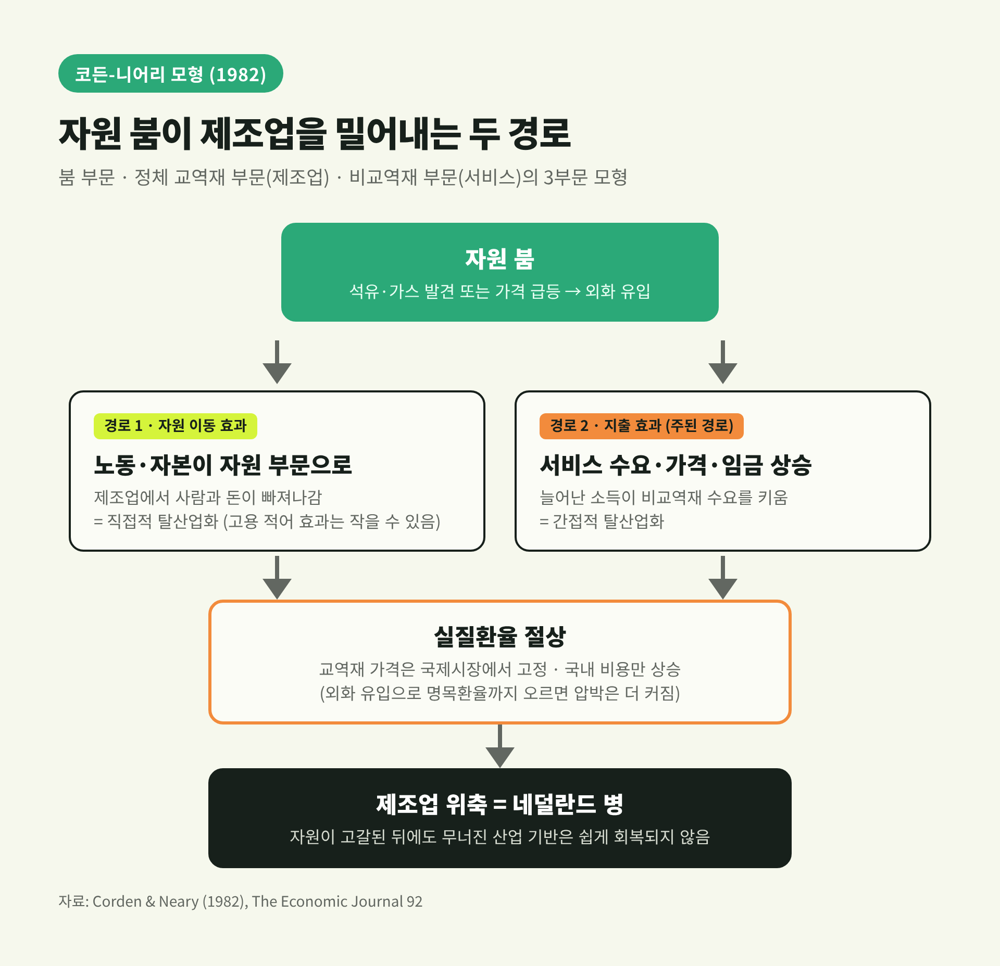
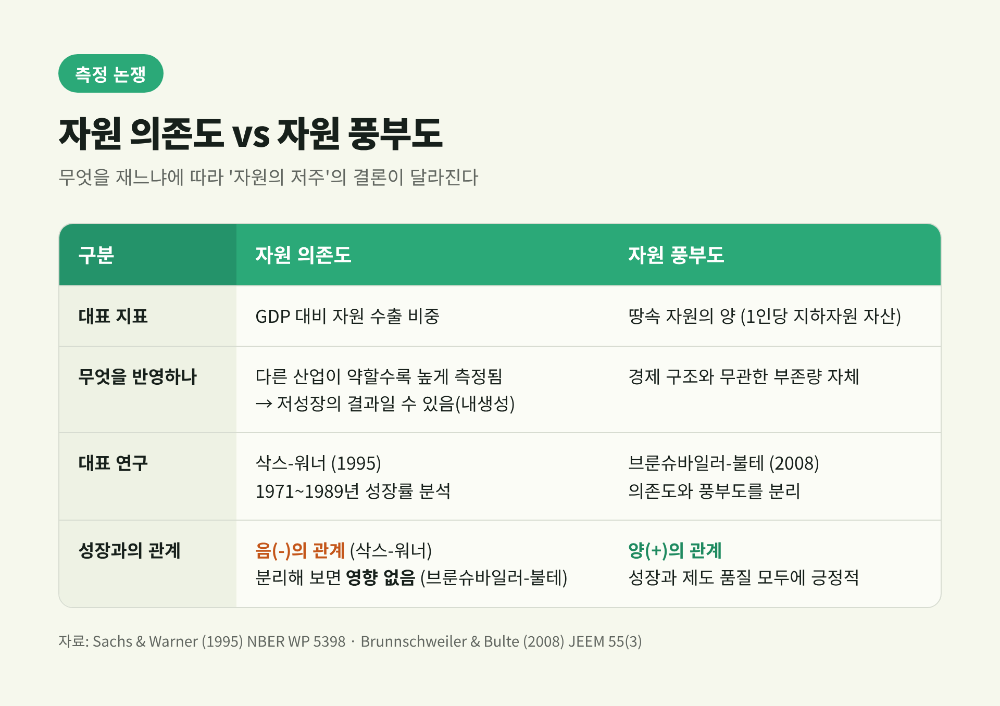
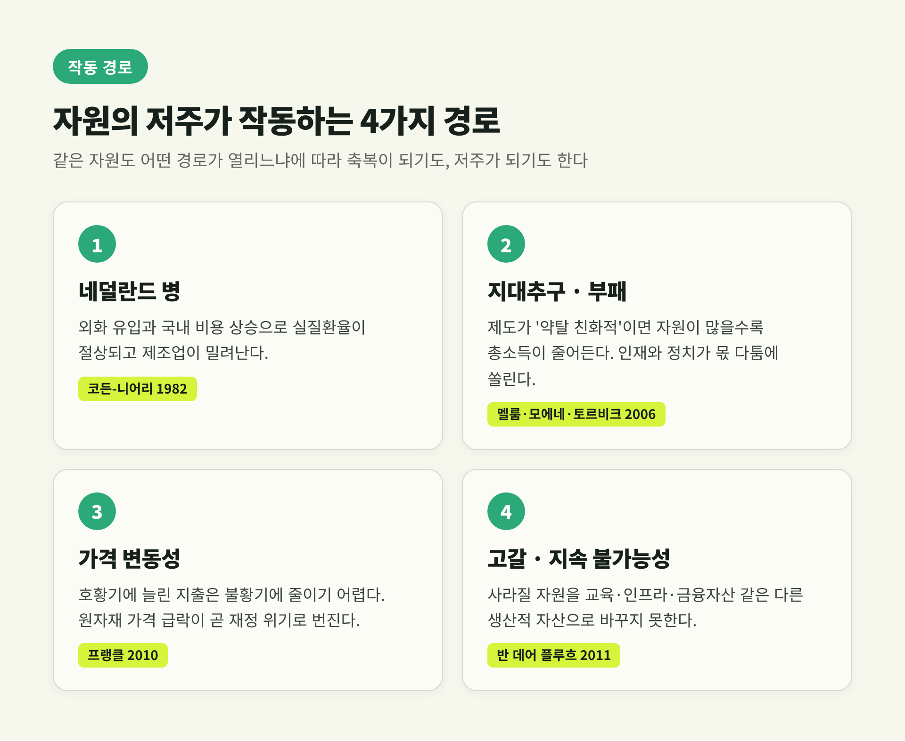
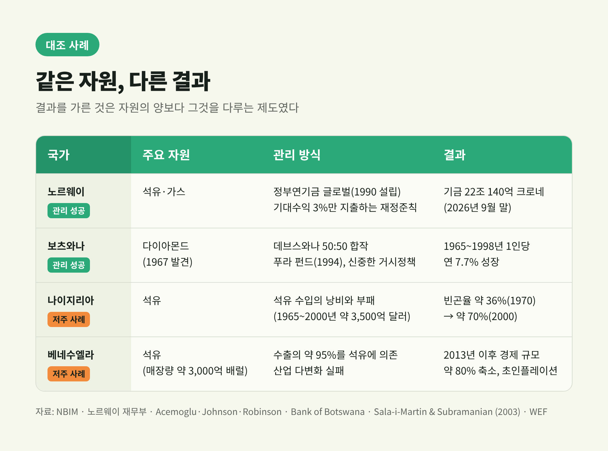
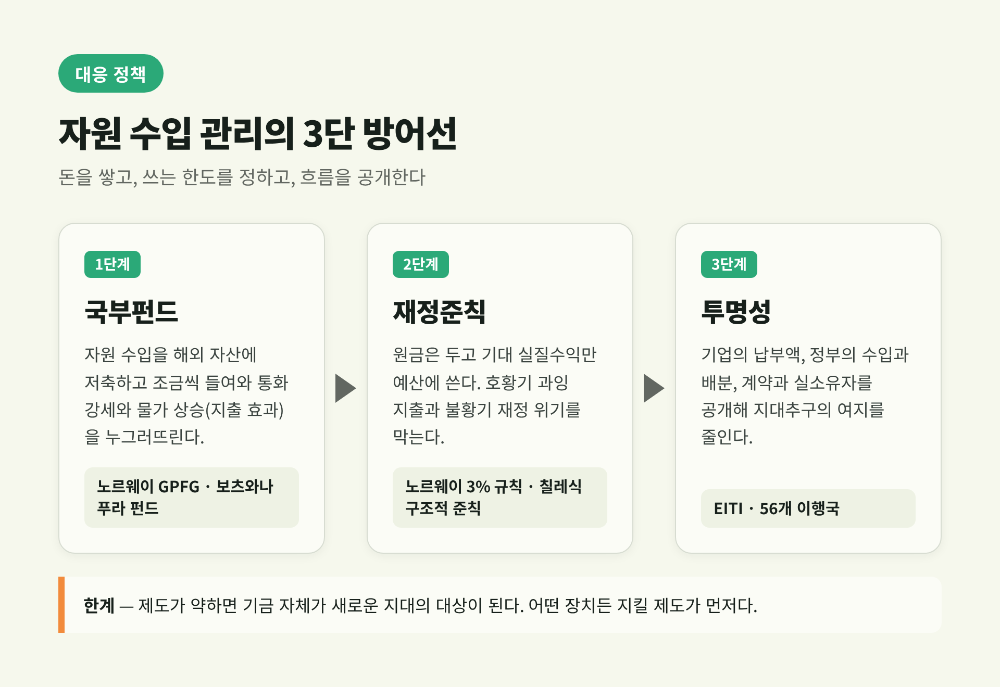

자원의 저주와 네덜란드 병 — 자원 부국은 왜 성장이 더딜까

오늘은 '자원의 저주'와 '네덜란드 병'을 정리해 보겠습니다. 땅속에 석유와 가스, 다이아몬드가 묻혀 있는데 왜 어떤 나라는 오히려 성장이 더딜까요. 네덜란드에서 시작된 이야기부터 경제학의 논쟁, 그리고 기름 한 방울 나지 않는 한국에 주는 의미까지 차례로 살펴봅니다.
먼저 세 줄로 요약하면 이렇습니다.
- 자원 수출로 외화가 몰리면 통화와 국내 물가가 함께 올라 제조업이 밀려납니다. 이것이 네덜란드 병입니다.
- 자원이 많을수록 성장이 느리다는 실증(삭스-워너, 1995)은 이후 측정 방식과 인과관계를 두고 거센 반론을 받았습니다.
- 결과를 가른 것은 자원의 양보다 제도였습니다. 노르웨이·보츠와나와 나이지리아·베네수엘라의 차이가 그것을 보여줍니다.
■ 1959년 흐로닝언, 그리고 1977년의 진단
1959년 네덜란드 북부 흐로닝언에서 대형 가스전이 발견됐습니다. 가스 개발이 본격화되자 수출은 크게 늘었습니다. 나라 밖에서 보면 더할 나위 없는 호재였습니다.
그런데 안쪽 사정은 달랐습니다. 1970년 1.1%였던 실업률은 1977년 5.1%까지 올랐고, 기업 투자는 줄어들었습니다.
영국 주간지 이코노미스트는 1977년 11월 26일자 기사에서 이 현상에 '네덜란드 병(The Dutch Disease)'이라는 이름을 붙였습니다. 기사가 짚은 것은 "대외적 건강과 대내적 병"의 대비였습니다. 가스 수출로 외화가 쏟아져 들어오자 네덜란드 통화인 길더가 강해졌고, 다른 수출 산업의 가격 경쟁력이 떨어졌습니다. 가스 채굴은 자본집약적이어서 일자리를 많이 만들지도 못했습니다. 길더 강세를 늦추려 금리를 낮게 유지하자, 이번에는 투자 자금이 해외로 빠져나갔습니다.
다만 반론도 있습니다. 1970년대 실업률 상승은 서유럽 전반에서 나타난 현상이었다는 지적입니다. 실제로 네덜란드는 이후에도 부유한 나라이자 손꼽히는 수출국으로 남았습니다. 이름은 네덜란드에서 왔지만, 병이 가장 깊었던 곳은 다른 나라들이었던 셈입니다.
덧붙이면, 흐로닝언 가스전은 수십 년간 이어진 채굴 유발 지진 피해 끝에 2024년 5월 1일 영구 폐쇄됐습니다.
■ 코든-니어리 모형 — 두 개의 효과와 실질환율
이 현상을 경제학의 언어로 정리한 것이 1982년 맥스 코든과 피터 니어리의 논문입니다. 두 사람은 경제를 세 부문으로 나눴습니다.
- 붐 부문: 갑자기 호황을 맞은 교역재 부문. 주로 석유·가스 같은 자원 채굴입니다.
- 정체 부문: 해외와 경쟁하는 또 다른 교역재 부문. 주로 제조업과 농업입니다.
- 비교역재 부문: 수출입이 어려운 서비스·건설 등입니다.

첫 번째 경로는 자원 이동 효과입니다. 붐 부문의 수익성이 높아지면 노동과 자본이 그쪽으로 옮겨 갑니다. 제조업에서 사람과 돈이 빠져나가는 '직접적 탈산업화'입니다. 다만 자원 채굴은 고용 규모가 작아서 이 효과는 크지 않을 수 있습니다.
두 번째 경로는 지출 효과이고, 보통 이쪽이 더 중요하게 다뤄집니다. 자원으로 번 돈이 국내에서 쓰이면 서비스 수요가 늘어납니다. 서비스는 수입으로 대체할 수 없으니 가격과 임금이 오릅니다. 그러면 제조업도 같은 임금을 줘야 사람을 붙잡을 수 있습니다.
여기서 핵심이 실질환율 절상입니다. 제조업 제품의 가격은 국제시장에서 정해집니다. 국내 비용만 오르고 판매 가격은 그대로이니 수익이 줄어듭니다. 비교역재 가격이 교역재 대비 오르는 것, 이것이 곧 실질환율 절상입니다. 네덜란드처럼 외화 유입으로 명목환율까지 오르면 압박은 두 배가 됩니다.
문제는 자원이 영원하지 않다는 데 있습니다. 붐이 끝난 뒤 한번 무너진 제조업 기반은 쉽게 되살아나지 않습니다.
■ 삭스-워너의 실증과 그 이후의 논쟁
1995년 제프리 삭스와 앤드루 워너는 이 문제를 국가 간 데이터로 검증했습니다. 1971년 기준 GDP 대비 자원 수출 비율이 높았던 나라일수록 1971~1989년 성장률이 낮았다는 결과였습니다. 초기 소득, 무역정책, 정부 효율성, 투자율을 통제해도 음(-)의 관계는 사라지지 않았습니다. '자원의 저주'가 실증적 사실처럼 받아들여진 계기였습니다.
하지만 반론이 이어졌습니다. 가장 날카로운 비판은 무엇을 재고 있느냐에 관한 것이었습니다.
크리스타 브룬슈바일러와 에르빈 불테(2008)는 'GDP 대비 자원 수출'이 자원의 풍부함이 아니라 자원 의존도를 재는 지표라고 지적했습니다. 다른 산업이 약한 나라일수록 자원 수출 비중은 자연히 높게 나옵니다. 그렇다면 자원이 성장을 막은 것이 아니라, 성장이 부진했기 때문에 자원 의존도가 높아진 것일 수도 있습니다. 경제학에서 말하는 내생성 문제입니다.
두 사람이 땅속 자원의 양, 즉 자원 풍부도를 따로 측정해 분석하자 결과가 달라졌습니다. 자원 의존도는 성장에 영향이 없었고, 자원 풍부도는 오히려 성장과 제도 품질에 긍정적이었습니다. 저주라는 역설 자체가 측정이 만든 착시일 수 있다는 주장입니다.

정리하면, 오늘날 경제학계는 "자원이 곧 저주"라고 단정하지 않습니다. 조너선 프랭클과 릭 반 데어 플루흐의 서베이 논문들은 증거가 양쪽을 모두 지지한다고 봅니다. 저주는 특정한 조건에서 나타난다는 것입니다.
■ 저주가 작동하는 경로 — 제도, 지대추구, 변동성
그 조건을 설명하는 대표 연구가 멜룸·모에네·토르비크(2006)입니다. 제도가 생산보다 '약탈'에 유리하게 짜여 있으면 자원이 많을수록 총소득이 줄어듭니다. 반대로 제도가 생산자에게 유리하면 자원은 소득을 늘립니다. 같은 자원이 축복도, 저주도 될 수 있다는 결론입니다.
지대추구는 그 구체적 모습입니다. 땀 흘려 가치를 만드는 것보다 자원 수입을 차지하는 쪽이 더 남는 장사가 되면, 인재와 정치는 그 몫을 둘러싼 다툼에 쏠립니다. 반 데어 플루흐는 자원 붐이 부패와 내전을 부추기기 쉽고, 특히 비민주국가에서 그렇다고 정리합니다.
가격 변동성도 무시할 수 없습니다. 원자재 가격은 몇 년 사이에도 크게 오르내립니다. 호황기에 늘린 지출은 불황기에 줄이기 어렵습니다. 프랭클은 장기 가격 추세, 변동성, 제조업 구축, 나쁜 제도, 고갈에 따른 지속 불가능성, 경기순환적 네덜란드 병을 저주의 여섯 경로로 꼽았습니다.

■ 같은 자원, 다른 운명 — 노르웨이·보츠와나와 나이지리아·베네수엘라
노르웨이는 가장 자주 거론되는 모범 사례입니다. 1990년 석유 수입을 관리할 기금을 만들었고, 1996년 첫 자금을 넣었습니다. 지금의 정부연기금 글로벌(GPFG)입니다. 핵심은 재정준칙입니다. 정부는 기금의 원금이 아니라 기대 실질수익만 예산에 쓸 수 있습니다. 기대수익률 가정은 2001년 4%로 시작해 2018년 예산부터 3%로 낮아졌습니다. 2026년 구조적 비석유 재정적자는 5,794억 크로네로, 기금의 2.8%입니다.
기금 시가는 2026년 9월 말 기준 22조 140억 크로네입니다. 2025년 말까지 정부가 넣은 돈은 누적 5조 4,200억 크로네였는데, 투자로 불어난 수익은 13조 4,570억 크로네였습니다. 석유는 언젠가 바닥나지만, 기금은 수익을 내며 다음 세대로 이어집니다. 돈을 해외 자산에 묶어 두니 국내로 한꺼번에 풀리지 않고, 지출 효과도 그만큼 누그러집니다.
보츠와나는 아프리카의 반례입니다. 1966년 독립 당시 포장도로는 12km, 대학 졸업자는 22명뿐이었습니다. 이듬해인 1967년 오라파에서 다이아몬드가 발견됐고, 정부는 드비어스와 지분 50:50의 합작사 데브스와나를 세웠습니다. 1965~1998년 1인당 소득은 연평균 7.7% 늘어 같은 기간 세계 최고 수준이었습니다. 애쓰모글루·존슨·로빈슨은 그 비결을 사유재산을 보호하는 제도, 비교적 깨끗한 관료제, 환율 과대평가를 막은 신중한 거시정책에서 찾았습니다. 1994년에는 다이아몬드 소득 일부를 미래 세대를 위해 떼어 두는 푸라 펀드도 만들었습니다.
물론 보츠와나도 완벽하지는 않습니다. 다이아몬드는 지난 10년간 상품 수출의 약 90%, 정부 수입의 약 3분의 1을 차지했습니다. 천연 다이아몬드 수요가 줄고 랩그로운 다이아몬드와의 경쟁이 거세지자, 2024년 광업 생산이 24% 줄고 실질 GDP는 약 3% 감소했습니다. 제도가 좋아도 한 품목에 기댄 경제는 가격 충격을 피하기 어렵다는 점을 보여줍니다.
나이지리아는 정반대 길을 걸었습니다. 1965~2000년 석유로 약 3,500억 달러(1995년 불변가격)를 벌었습니다. 그런데 1인당 GDP는 2000년에도 1965년 수준에 머물렀습니다. 하루 1달러 미만으로 사는 인구 비율은 1970년 약 36%에서 2000년 약 70%로 올랐습니다. 사비에르 살라이마르틴과 아르빈드 수브라마니안은 원인을 네덜란드 병보다 석유 수입의 낭비와 부패에서 찾았습니다.
베네수엘라는 세계 최대인 약 3,000억 배럴의 확인 매장량을 가진 나라입니다. 1950년에는 1인당 GDP가 세계 4위권이었습니다. 하지만 수출의 약 95%를 석유에 기대는 구조를 바꾸지 못했고, 2013년 이후 유가 하락과 정책 실패가 겹치며 경제 규모가 10년도 안 돼 약 80% 줄었다는 평가를 받습니다. 초인플레이션도 뒤따랐습니다.

■ 처방은 무엇인가 — 국부펀드, 재정준칙, 투명성
성공 사례에서 공통으로 보이는 처방은 세 가지입니다.
첫째, 국부펀드입니다. 자원 수입을 해외 자산에 쌓아 두고 조금씩 들여오면 갑작스러운 통화 강세와 물가 상승을 누그러뜨릴 수 있습니다. 가격이 급락할 때는 완충재가 됩니다. 노르웨이 외에도 알래스카 영구기금, 쿠웨이트·호주 등의 기금이 같은 원리를 따릅니다.
둘째, 재정준칙입니다. 노르웨이의 3% 규칙처럼 "얼마까지 쓸 수 있는가"를 미리 정해 두면 호황기의 과잉 지출을 막을 수 있습니다. 프랭클은 칠레식 구조적 재정준칙도 대표적 대안으로 꼽습니다.
셋째, 투명성입니다. 2003년 공식 출범한 채굴산업투명성기구(EITI)는 자원 기업이 정부에 낸 돈과 정부가 거둔 수입, 그 배분까지 공개하도록 하는 국제 기준입니다. 이행국은 해마다 보고서를 내야 합니다. 현재 56개국이 이행하고 있으며, 실소유자와 계약 공개도 주요 의제입니다. 돈의 흐름이 드러나면 지대추구의 여지가 줄어듭니다.

한계도 분명합니다. 개발도상국에서는 당장 쓸 곳이 많아 돈을 묶어 두는 일이 정치적으로 어렵습니다. 제도가 약한 나라에서는 기금 자체가 새로운 지대의 대상이 되기도 합니다. 결국 어떤 장치든 그것을 지킬 제도가 먼저 있어야 작동합니다.
■ 자원 빈국 한국에 주는 시사점
한국은 정반대 처지에 있습니다. 2024년 에너지 수입의존도는 93.7%로, 30년 넘게 90%대를 벗어나지 못했습니다. 원자력을 국내 생산으로 치는 국제에너지기구 방식으로 계산해도 에너지자립도는 22.1%로 OECD 38개국 중 35위입니다. 두 수치의 차이는 우라늄을 수입으로 보느냐에 따른 정의 차이입니다.
예전엔 자원이 없다는 것이 약점으로만 여겨졌습니다. 지금 돌아보면 그 결핍이 오히려 제조업과 수출, 교육에 매달리게 만든 측면도 있습니다. 자원의 저주가 없었다는 것은 작지 않은 행운이었는지도 모릅니다.
그렇다고 한국이 네덜란드 병과 무관한 것은 아닙니다. 네덜란드 병의 본질은 '한 부문의 호황이 통화와 비용을 끌어올려 나머지 산업을 압박하는 것'입니다. 그 호황이 꼭 석유일 필요는 없습니다. 특정 수출 품목이 장기간 큰 호황을 누릴 때도 비슷한 압력이 생길 수 있습니다. 호황기 수입을 미래를 위해 떼어 두는 규칙, 쓸 수 있는 한도를 정하는 준칙, 돈의 흐름을 공개하는 투명성은 자원 부국만의 숙제가 아닙니다.
반대로 에너지 수입국이라는 처지는 가격 변동성의 반대편 충격을 뜻합니다. 유가가 오르면 교역조건이 나빠지고 물가가 흔들립니다. 에너지 수입원을 다변화하고 효율을 높이는 일, 그것이 한국에 맞는 '자원 관리'라고 생각합니다.
정리하면 이렇습니다. 자원의 저주는 피할 수 없는 운명이 아니었습니다. 같은 석유가 노르웨이에서는 다음 세대의 자산이 됐고, 나이지리아에서는 빈곤을 키웠습니다. 차이를 만든 것은 땅속이 아니라 땅 위의 제도였습니다.
"자원은 기회를 줄 뿐, 결과를 정해 주지는 않는다."
자원이 없는 나라에게도 이 교훈이 유효하냐고 물으신다면, 그렇다고 답하겠습니다. 호황을 다루는 방식은 무엇이 호황을 가져오든 똑같이 시험대에 오르기 때문입니다.
참고자료
- Wikipedia, "Dutch disease"
- Econlib, "What Dutch disease?" (이코노미스트 2014 기사 인용)
- The National, "Economics 101: What is Dutch disease"
- NL Times, Groningen 가스전 영구 폐쇄 상원 승인 (2024-04-17)
- Sachs & Warner (1995), "Natural Resource Abundance and Economic Growth", NBER WP 5398
- Brunnschweiler & Bulte (2008), "The resource curse revisited and revised", JEEM
- Mehlum, Moene & Torvik (2006), "Institutions and the Resource Curse", Economic Journal
- Frankel (2010), "The Natural Resource Curse: A Survey", Harvard CID WP 195
- van der Ploeg (2011), "Natural Resources: Curse or Blessing?", JEL
- Sala-i-Martin & Subramanian (2003), "Addressing the Natural Resource Curse: An Illustration from Nigeria", NBER WP 9804
- Norwegian Petroleum, "Management of revenues" (2026-02-27)
- 노르웨이 정부, Meld. St. 1 (2025–2026) 3.1 Fiscal policy in 2026
- NBIM, "Negative return in the third quarter" (2026-10-22)
- Acemoglu, Johnson & Robinson, "An African Success Story: Botswana" 요약
- Al Jazeera, "Botswana at 60" (2026-10-01)
- IMF, Botswana 2025 Article IV Mission 보도자료 (2025-09-26)
- Bank of Botswana, "Pula Fund"
- De Beers Group DTC, "Botswana"
- World Economic Forum, "Venezuela was once twelve times richer than China" (2017)
- Wikipedia, "2013–present economic crisis in Venezuela"
- EITI, Countries
- Wikipedia, "Extractive Industries Transparency Initiative"
- 데일리안, "에너지 94% 수입하는 韓…"
- 아시아경제, "한국 에너지자립도 22.1%…OECD 38개국중 35위" (2026-04-14)